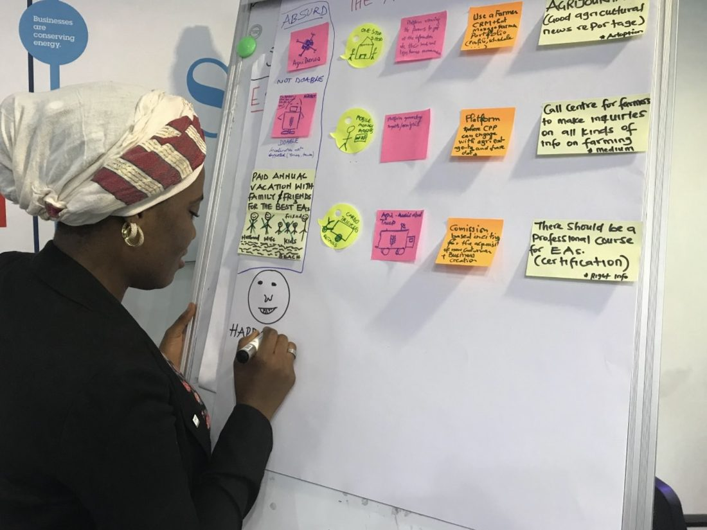
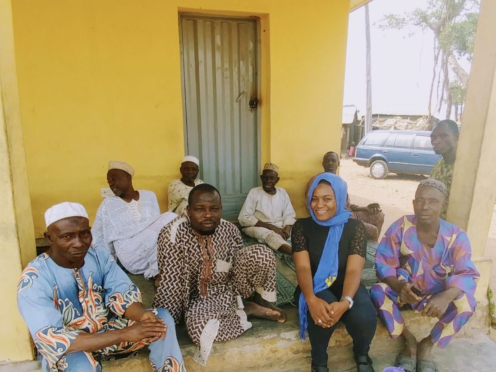
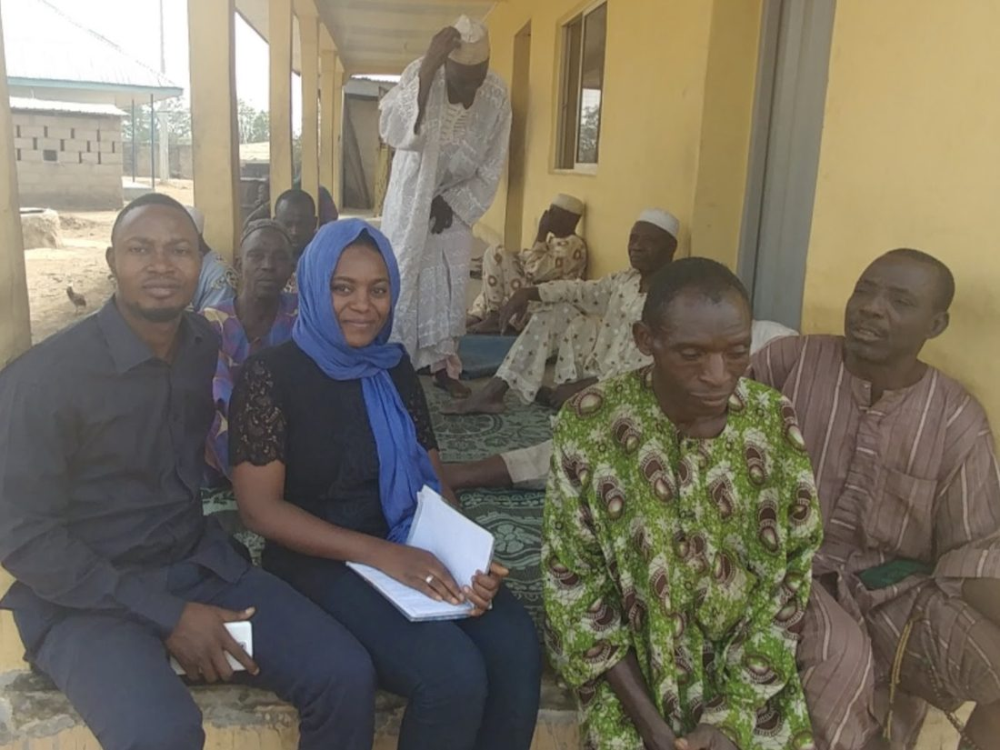

I help funders and implementers design, deliver, and evaluate agriculture programs that actually fit the farmers they are meant to serve.
Programme design & strategy · Monitoring, evaluation & learning · Policy, trade & institutional analysis
Too many farmer programs are designed far from the field, and they discover too late that the plan never fit real life. I am the voice that belongs in the room while the program is still being shaped, the one with the ground experience to know what will work, the rigor to prove whether it did, and the clarity to make the whole thing land.
The world already grows enough food, and it already knows how to farm. Hunger and rural poverty survive somewhere quieter, in the last mile between what institutions produce and what actually reaches the farmer. That distance is where food security is decided, and few people have worked it from every side. I have trained smallholder farmers as an extension officer, moved fertilizer at national scale, built technology meant to cross the gap, and evaluated the aid designed to close it.
My doctoral research named one version of the problem. Aid can lift a country's exports while quietly raising the cost of trading, so the gains register at the institution and are absorbed before they reach the people who grew the goods. Who captures that value, and why, is a question of politics and institutions rather than agronomy. The pattern repeats wherever food moves, and the work, every time, is to close the distance.
The Atlantic ports, where imported inputs arrive and exports leave
The northern commercial hub, where produce is aggregated and traded
The crossing into Niger Republic, where formal and informal trade meet
Aid enters this route at one end and farms sit along the whole of it. What moving goods costs, and who collects those costs on the way, decides how much of the support survives the journey.
Does the input arrive before the planting window closes? A season missed is a year lost, and no amount of design corrects it afterwards.
Who carries it the final stretch, over which road, in whose vehicle? This is where most delivery plans quietly stop being true.
Who captures the margin between the farmgate and the market, and which of those costs were made by policy rather than geography?
Is anyone there to advise the farmer when it lands? An input without advice is a cost the household absorbs alone.
The work is built for foundations, development banks, United Nations agencies, bilateral donors, implementing partners, and agribusinesses, all of them people designing or running programs that touch farmers.
Each engagement is scoped and agreed before work begins, and sized to what the question actually needs rather than to a standard package.
For organizations planning agricultural development, farmer support, food security, or rural livelihood interventions.
Build programmes that account for the realities of implementation before resources are committed.
For organizations that need credible evidence of programme performance and outcomes.
Understand what your programme is achieving, where implementation is falling short, and what needs to change.
For organizations requiring specialized research into the policies, institutions, and economic conditions shaping agricultural development.
Make better decisions with research that connects policy intentions to institutional and market realities.
For consulting firms, development organizations, and research teams preparing proposals or delivering funded assignments.
Bring credible technical expertise into your proposal or delivery team when you need it.
A focused review for an organization developing or implementing a programme. It is the straightforward way to get expert eyes on your design before you commission a full evaluation, and the fastest way for us to find out whether we work well together.
Scope and fee are tailored to the assignment and agreed in writing before any work begins.
I am Nafeesat Rabiu-Adebayo, founder of Bridge Strategy Consulting, a political economist and agricultural policy strategist. I have trained smallholder farmers in the field and supervised fertilizer logistics under a national program. At OCP Africa I worked as business analyst and then product owner on a digital agriculture platform built with IBM, carrying it from requirements and stakeholder research through to a working prototype. Separately, I supported Agribooster, a bundled-input initiative that reached smallholders across five-plus Nigerian states.
I started in the fields of Kwara State, training smallholder farmers through extension work. I moved through national fertilizer logistics, into agritech product development with OCP Africa and IBM, and then into a doctorate at the University of East Anglia's School of Global Development, studying the political economy of how aid and trade travel along agricultural corridors.
I hold four degrees across agriculture, global affairs, and international development, formed in Nigeria, the United States, and the United Kingdom. The graduate work covered political economy, NGO management, migration, and conflict studies. PMP, PMI-ACP, and AWS certifications sit alongside executive credentials from Wharton, the World Bank, and the IMF.
That range is the point. I can translate between the field and the policy table, which is exactly where most programmes lose their way.
Work carried out in previous roles and doctoral research, before founding Bridge Strategy Consulting. It is the experience the practice is built on rather than a list of Bridge engagements.



The positions my work is built on, applied to the questions food systems are facing right now.
Making the hidden logic of food systems legible to the people who fund them, build them, and depend on them, through research, writing, and public work on rural livelihoods and the distance between institutions and households.
A public education channel on how the world feeds itself, country by country, with more than 45,000 views from viewers in many countries.
Watch on YouTubeEssays on development, political economy, and the human systems that shape how we live, written to earn the reader's time by saying something true and saying it well.
Read on MediumNine short stories about women whose intelligence lives outside the places the world is trained to look for it, the kind of sharp mind that goes unnamed and miscounted, working quietly inside lives the systems never thought to measure.
Purchase on AmazonA translated and annotated collection of over three hundred classical Arabic aphorisms on character, knowledge, and governance, made accessible to contemporary readers.
Purchase on AmazonIf you are designing or running a program that touches farmers, let us make sure it fits the people it is for.
Start a conversationBridge is a founder-led practice. Where an assignment needs additional technical depth, I work with trusted specialists rather than carrying overhead a client does not need.
On agriculture and climate-resilience work I collaborate with Aidant Agro-Tech, a Nigerian advisory firm founded by my own professor and mentor, the teacher who first taught me agriculture. Her research spans climate-smart agriculture, pastoralism under extreme weather, water allocation, and post-harvest systems. Where an assignment calls for that depth, we can take it on together.
Tell me a little about the assignment, where it stands, and what you would like a second pair of eyes on. I read every enquiry myself and will come back to you.